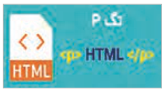
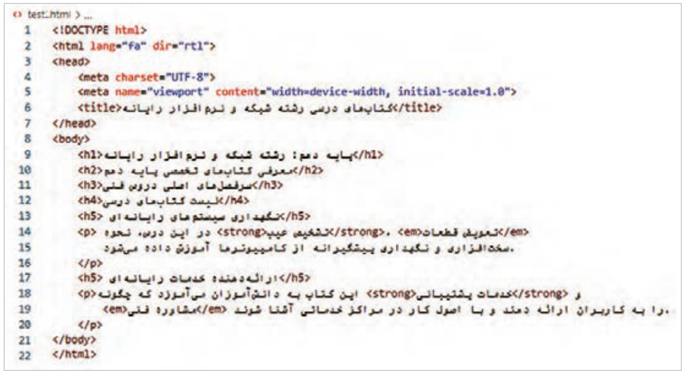
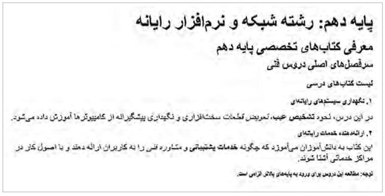
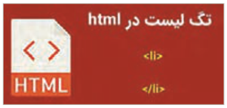
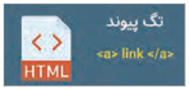
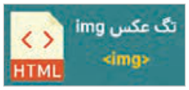

در یک صفحه وب انواع مختلفی از عناصر متنی وجود دارد که نشانهگذاری هر یک از آنها توسط تگ مشخصی صورت میپذیرد. این بخش به معرفی عناصر متنی صفحه وب میپردازد.
تیتربندی تگهای <h1> …<h6>
صفحات وب دارای انواع متفاوتی از محتوا هستند. در یک صفحه وب که حاوی یک مقاله علمی یا ادبی باشد، برای سازماندهی محتوا از تیترهای مختلف استفاده میشود. چنین تیترهایی در یک صفحه فروشگاهی کمتر به چشم میخورند، اما برای بخشهای خاصی از صفحه کاربرد دارند.
شکل ۹
برای نشانهگذاری تیترهای صفحه وب از تگ <h1> تا <h6> استفاده میشود. تگ <h1> برای موضوع اصلی صفحه استفاده میشود. تگ <h2> برای تیترهای زیرمجموعه موضوع اصلی به کار میرود که این تیترها دستهبندی موضوعات مطرح شده در صفحه را مشخص میکنند؛ بنابراین دارای اهمیت بالایی هستند. تگهای <h3> تا <h6> برای تیترهایی با موضوعات جزئیتر استفاده میشوند.
شکل کلی تگهای تیترگذاری
<h1> تیتر اصلی صفحه </h1>
<h2> 2 تیتر درجه </h2>
<h3> 3 تیتر درجه </h3>
تیتر <h1> برای موتورهای جستوجو دارای اهمیت بالایی است چرا که موضوع صفحه را برای آنها مشخص میکند. این تیتر باید حاوی کلمات کلیدی موضوع صفحه باشد. توصیه میشود که این تیتر فقط یکبار در صفحه به کار برده شود.
بهطور کلی تگهای <h1> تا <h6> سلسله مراتب موضوعات صفحه را مشخص میکنند. با استفاده درست این عناصر، کاربران میتوانند محتوای صفحه را راحتتر مطالعه کنند و موضوعات مورد نظر خود را در میان محتواهای موجود پیدا کنند. علاوه بر این موتورهای جستوجو به راحتی متوجه موضوعات مطرح شده در صفحه میشوند و میتوانند اطلاعات صفحه وب را به شکل بهتری در پایگاه داده خود ذخیره نمایند. تیترگذاری مناسب محتوا تأثیر قابل توجهی در رتبه صفحه وب در نتایج جستوجو دارد.
صفحه ۹۹
تگ <p>: این تگ برای نشانهگذاری پاراگرافها مورد استفاده قرار میگیرد. محتوایی که بین <p> و </p> قرار میگیرد، از محتوای قبل و بعد خود جدا شده و در یک سطر جدید نمایش داده میشود. میتوان درون <p> از متن ساده، لینک <a>، برجستهسازی <b> یا <strong> و ... استفاده کرد.

شکل ۱۰
تگهای <strong> و <b>: برای نمایش یک کلمه بهصورت ضخیم، میتوان از دو تگ <b> و <strong> استفاده نمود. مرورگر وب محتوای این دو تگ را بهصورت یکسان نمایش میدهد، اما موتورهای جستوجو در برخورد با آنها تفسیر متفاوتی دارند. اگر عبارتی با تگ <strong> نشانهگذاری شود، به معنای آن است که محتوای این عنصر دارای اهمیت بالایی است و با موضوع صفحه ارتباط دارد. ابزارهای صفحهخوان (Screen reader) نیز محتوای تگ <strong> را با صدای بلندتری میخوانند، درحالیکه در برخورد با تگ <b> تغییری در لحن خود ایجاد نمیکنند، چرا که تگ <b> مفهوم خاصی را منتقل نمیکند.
تگهای <em> و <i>: برای نمایش یک کلمه به صورت کج، از دو تگ <em> و <i> استفاده میشود. هرچند که مرورگرهای وب محتوای این دو تگ را به صورت مشابه نمایش میدهند، اما معنای آنها در HTML و تأثیرشان بر روی موتورهای جستوجو و دسترسی به محتوا متفاوت است.
صفحه ۱۰۰
تگ <em> : مخفف عبارت Emphasis و به معنای تأکید است. استفاده از برچسب <em> باعث نمایش متفاوت یک عبارت و افزایش خوانایی متن میگردد. این امر به بهبود تجربه کاربری کمک میکند و در نتیجه تأثیر مثبتی بر سئوی صفحه خواهد داشت. ابزارهای صفحهخوان نیز در برخورد با تگ <em> با تغییر لحن صدای خود، اهمیت محتوای تگ را به کاربران نابینا اعلام میکنند.
تگ <i>: که مخفف عبارت italic است، بیشتر برای اهداف ظاهری و زیباییشناسی به کار میرود و موتورهای جستوجو به آن توجه خاصی ندارند. همچنین دستگاههای صفحهخوان هنگام مواجه شدن با تگ <i> تغییری در لحن خود ایجاد نمیکنند.
بهکارگیری تگهای <i> و <em>

شکل ۱۱
عبارت dir="rtl" در تگ <html> برای تعیین جهت نمایش محتوا از راست به چپ استفاده شده است. خروجی کد بهصورت شکل ۱۲ خواهد بود:

شکل ۱۲
صفحه ۱۰۱
تگهای لیست: تگهای لیست برای سازماندهی و نمایش اطلاعات استفاده میشوند. این تگها امکان مشاهده محتوا را بهصورت منظم و قابل فهم فراهم میکنند. استفاده از لیستها برای سازماندهی محتوا باعث خوانایی و جذابیت محتوا برای کاربران و در نتیجه بهبود تجربه کاربری و رتبه بهتر در نتایج جستوجو میشود.

شکل ۱۳
سه نوع لیست در HTML قابل نشانهگذاری است: لیستهای مرتب، نامرتب و توضیحی.
این لیستها توسط تگهای <ul>، <ol> و <dl> ایجاد میشوند.
تگ <ul>: مخفف عبارت Unordered list است. این تگ برای ایجاد یک لیست گلولهدار بهکار میرود. برای علامتگذاری عناصر لیست از تگ <li> استفاده میشود.
تگ <ol>: مخفف عبارت Ordered list است. برای ایجاد لیستهای شماره دار تگ <ol> استفاده میشود.
صفحه ۱۰۲
پیوندها (links): پیوندها همانند پل ارتباطی میان صفحات هستند که کاربران را به صفحات و منابع مورد نظرشان هدایت میکنند.

شکل ۱۴
برای ایجاد ارتباط بین صفحات از تگ <a> استفاده میشود. این تگ مخفف anchor و به معنای «لنگر» است. تگ <a> میتواند کاربر را به یک صفحه وب، تصویر، فایل pdf و موارد دیگر هدایت کند.
برای ایجاد پیوند از ساختار کلی زیر استفاده میشود:
<a href="Resource address" target="target" title=" description"> anchor Text </a>
در ویژگی href آدرس صفحه یا فایل مقصد نوشته میشود. عبارت href مخفف Hypertext reference است.
عبارت anchor text به متن پیوند؛ همان چیزی که کاربر میبیند و روی آن کلیک میکند؛ اشاره دارد. چنانچه کاربر روی متن پیوند کلیک نماید به آدرس منبع مشخص شده در ویژگی href هدایت میشود.
صفحه مقصد پیوندها بهصورت پیشفرض در صفحه وب جاری باز میشود؛ در نتیجه محتوای قبلی صفحه ناپدید میگردد.
برای باز شدن صفحه مقصد در برگه جدیدی از مرورگر، از ویژگی target با مقدار _blank استفاده میشود. مقدار پیشفرض ویژگی target برابر _self است؛ به این معنی که اگر ویژگی target در تگ <a> مشخص نشود، مقصد لینک در همان صفحه باز شود.
ویژگی title حاوی توضیحی درباره لینک است. این ویژگی اختیاری است.
صفحه ۱۰۳
مقصد یک لینک میتواند نقطه دیگری از صفحه جاری باشد. در این حالت شناسه (ID) عنصر مقصد در ویژگی href نوشته میشود.
افزودن تصاویر به صفحه وب
تصاویر یکی از عناصر مهم در محتوای یک صفحه هستند که میتوانند تأثیرات عمیقی بر جذابیت، ارتباطپذیری و اثربخشی محتوای صفحه داشته باشند. استفاده از تصاویر در صفحات وب میتواند باعث جلب توجه کاربران شود بهگونهای که مدت زمان توقف آنها در صفحه بیشتر شود. بهعلاوه تصاویر نقش مهمی در توضیح و تبیین محتوای متنی دارند، چرا که میتوانند اطلاعات را به صورت بصری منتقل کنند.

شکل ۱۵
برای نمایش یک تصویر در صفحه وب از تگ <img> استفاده میشود. شکل کلی این تگ بهصورت زیر است:
alt: کلمه alt مخفف Alternative text است. مقدار این ویژگی، متن جایگزین تصویر را مشخص میکند. این متن در صورت عدم بارگذاری تصویر نمایش داده میشود. بهعلاوه مقدار Alt بیانگر مفهوم و محتوای تصویر برای کاربر و موتورهای جستوجو است.
Page 98
Text elements in a web page
A web page has different kinds of text elements, and each is marked up with a certain tag. This part introduces the text elements of a web page.
Headings: the tags <h1> …<h6>
Web pages have many kinds of content. A page holding a scientific or literary article uses different headings to organize its content. Such headings are less common on a shopping page, but they are useful for certain parts of the page.
Figure 9
Headings of a web page are marked up with the tags <h1> to <h6>. The <h1> tag is used for the main topic of the page. The <h2> tag is used for the headings under the main topic, which group the topics on the page, so they are very important. The <h3> to <h6> tags are used for headings of more detailed topics.
The general form of the heading tags
<h1> تیتر اصلی صفحه </h1>
<h2> 2 تیتر درجه </h2>
<h3> 3 تیتر درجه </h3>
The <h1> heading is very important to search engines, because it tells them the topic of the page. It should contain the keywords of the page's topic. It is recommended to use it only once per page.
In general, the <h1> to <h6> tags set the hierarchy of the page's topics. Used properly, they let users read the page more easily and find the topics they want among the content. Search engines also easily understand the topics of the page and can store the page's information better in their databases. Good headings have a noticeable effect on a page's rank in search results.
Page 99
The <p> tag: used to mark up paragraphs. The content between <p> and </p> is separated from the content before and after it and shown on a new line. Inside <p> you can use plain text, links <a>, emphasis <b> or <strong>, and so on.
Figure 10
The <strong> and <b> tags: to show a word in bold you can use either <b> or <strong>. Browsers show the content of the two tags the same way, but search engines interpret them differently. Marking a phrase with <strong> means its content is very important and related to the topic of the page. Screen readers (Screen reader) also read the content of <strong> louder, while they do not change their tone for <b>, because <b> carries no special meaning.
The <em> and <i> tags: to show a word in italics, the <em> and <i> tags are used. Although browsers show the content of the two tags the same way, their meaning in HTML and their effect on search engines and accessibility are different.
Page 100
The <em> tag: short for Emphasis. Using <em> makes a phrase look different and the text easier to read. This improves the user experience and so has a positive effect on the page's SEO. Screen readers also change their tone for <em>, telling blind users that its content is important.
The <i> tag: short for italic; it is used mostly for appearance and looks, and search engines pay no special attention to it. Screen readers do not change their tone when they meet <i>.
Using the <i> and <em> tags
Figure 11
The attribute dir="rtl" in the <html> tag is used to show the content from right to left. The output of the code will be as in Figure 12:
Figure 12
Page 101
List tags: list tags are used to organize and present information. They let content be seen in an orderly, understandable way. Using lists to organize content makes it more readable and attractive for users, which improves the user experience and the rank in search results.
Figure 13
HTML can mark up three kinds of lists: ordered, unordered, and description lists.
These lists are created with the tags <ul>, <ol>, and <dl>.
The <ul> tag: short for Unordered list. This tag creates a bulleted list. The <li> tag is used to mark the items of the list.
The <ol> tag: short for Ordered list. The <ol> tag is used to create numbered lists.
Page 102
Links: links are like a bridge between pages, leading users to the pages and resources they want.
Figure 14
The <a> tag is used to link pages. Its name is short for anchor. The <a> tag can take the user to a web page, an image, a pdf file, and more.
A link is created with the general structure below:
<a href="Resource address" target="target" title=" description"> anchor Text </a>
The href attribute holds the address of the destination page or file. href stands for Hypertext reference.
The anchor text is the text of the link, the part the user sees and clicks. When the user clicks the link text, they are taken to the address given in the href attribute.
By default, the destination of a link opens in the current page, so the page's previous content disappears.
To open the destination in a new browser tab, the target attribute is used with the value _blank. The default value of target is _self; that is, if target is not set in the <a> tag, the link opens in the same page.
The title attribute holds a description of the link. It is optional.
Page 103
The destination of a link can be another point in the current page. In that case the ID (ID) of the target element is written in the href attribute.
Adding images to a web page
Images are one of the important elements of a page's content and can strongly affect how attractive, engaging, and effective the content is. Images on web pages catch users' attention so that they stay on the page longer. Images also play an important role in explaining text content, because they can carry information visually.
Figure 15
The <img> tag is used to show an image in a web page. Its general form is:
alt: alt stands for Alternative text. Its value is the replacement text of the image, which is shown if the image does not load. The Alt value also tells users and search engines what the image means and shows.